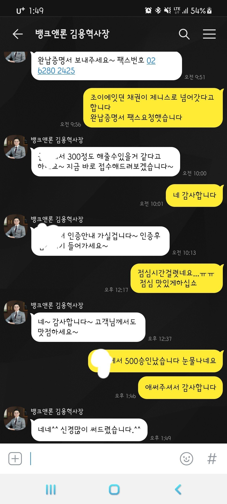
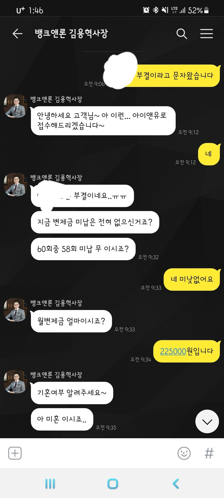
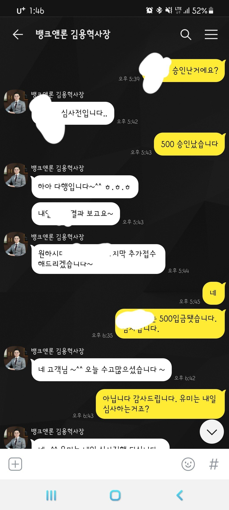

[직장인대출] 대출후기. 김용혁사장님 감사합니다
재직형태-프리랜서(법인대리기사)
재직기간- 4개월차
4대보험 x
소득 - 월 300
채무 내역- 개인 회생 60회중 58회차
법인대리기사 입니다.
대리경력은 좀 되지만 법인회사에 가입되고
매주 통장 수령하다보니 결과가 좋게나온거같네요.
물론 김용혁사장님이 힘써주신 덕분 입니다.
약 3개월전 급여충족(근무 월수)가 충적되지 않아서
개인회생 대출로 알아봐주셧는데
기대출 약80있엇고.. 회생미납 2.2회정도 잇엇고..
결과는 모두 부결 났었습니다.
3개월후 통장수령 금액도 충족하고 근무개월수도 충족하여 다시 도전한 결과
두군데 500씩 나왔네요.
다시한번 감사말씀 드립니다.


